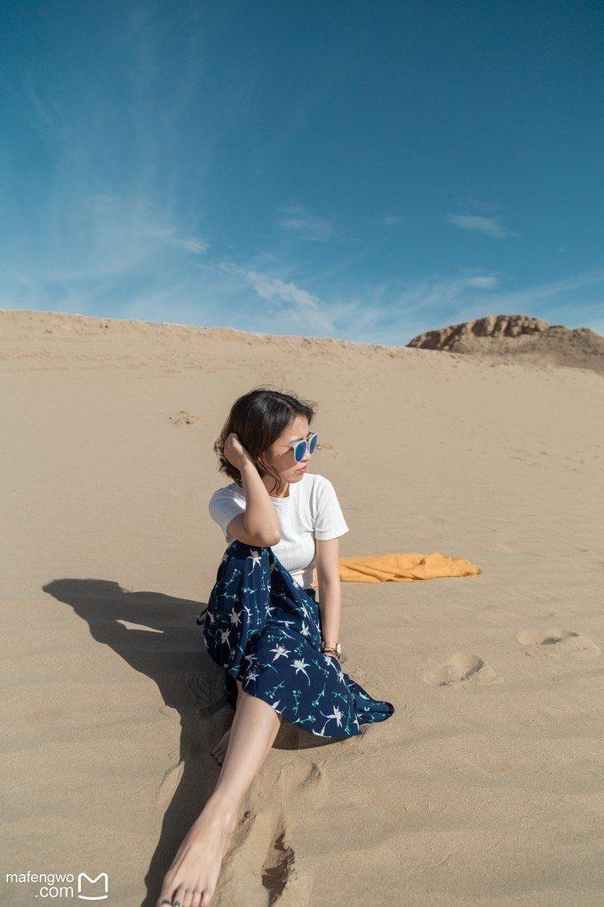
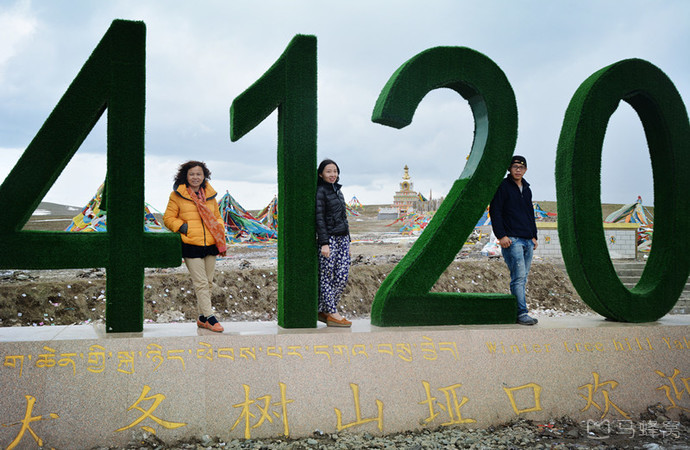
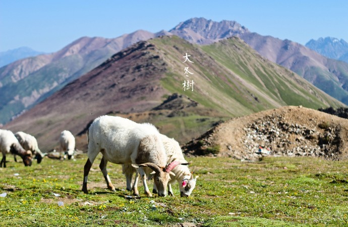
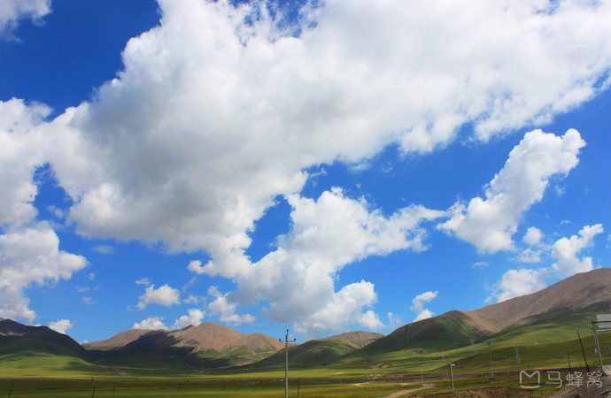

大冬树垭口
是西宁去祁连路上会经过的地方，海拔4120米。山口气温很低，常常会有积雪，即使夏季也经常会拍到雪景。
是绝大多数自驾川藏线的驴友行程中的最高点。垭口两边是一望无际的水草丰美的高山草甸，羊群、牦牛一片片散落在漫山遍野，在牛羊在山坡上悠闲的吃草。此处还有一个休息站，游客们可以下车观赏风景，为之后的旅行稍做休息和准备。



特别巨大，我们站在4120的高海拔上，巨大的风，很冷！翻过这个之后，才是比较不好过的，急剧下山路，会产生高原反应，很多高反发生都是在这段路。